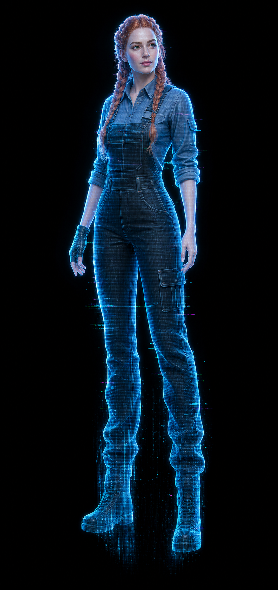

O Pacote Completo (Sem Módulos) 🚛

Companhia de Verdade 🗣️
Seu caminhão agora tem vida. Ela conhece sua rota, carga e fluidos. Conversa natural com sotaques brasileiros (baiano, gaúcho, carioca, paulista, mineiro).
Sincronia Total (SDK SCS) ⚙️
Controle faróis, motor, limpadores, buzina, pisca-alerta e muito mais com a sua voz. Confirmação instantânea e real dentro do jogo.

Holograma Reativo
Uma projeção elegante na cabine cujas cores mudam conforme a sua atenção, o estresse ou perigos na estrada confirmados pela telemetria.
⏳ EM BREVE
Garota GOLIVE 📡
Lê o chat e apoios do YouTube/Twitch. A sua audiência interage com a cabine, mas você nunca perde o controle da direção.